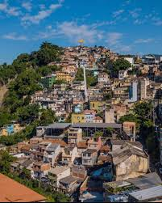
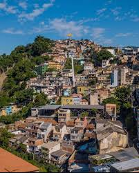
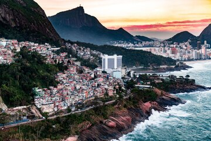
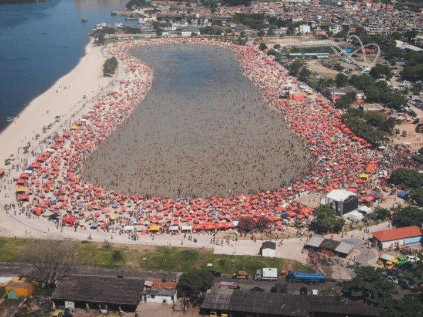
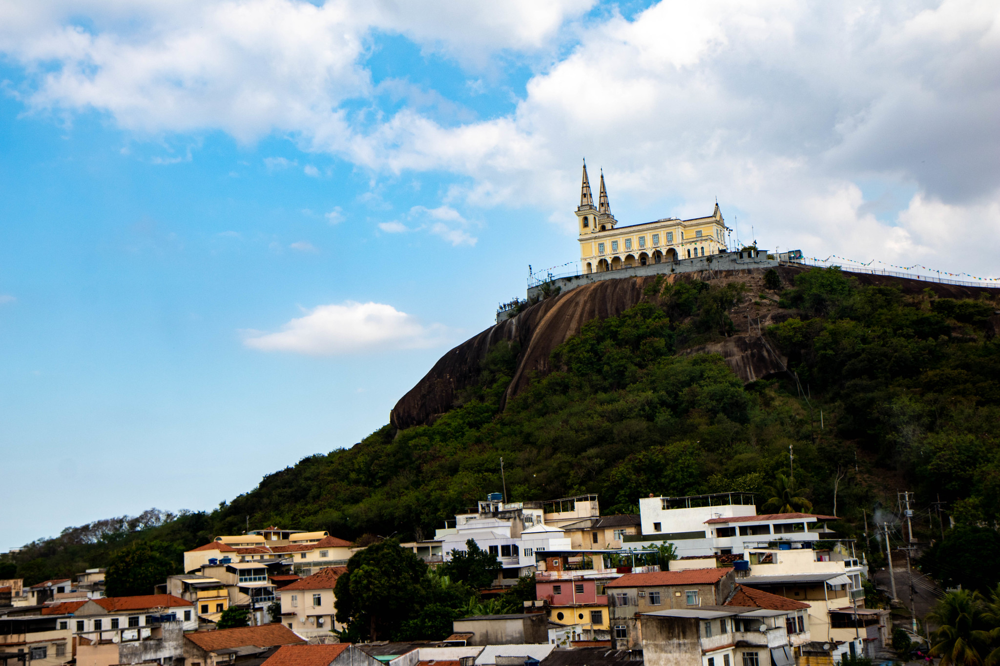
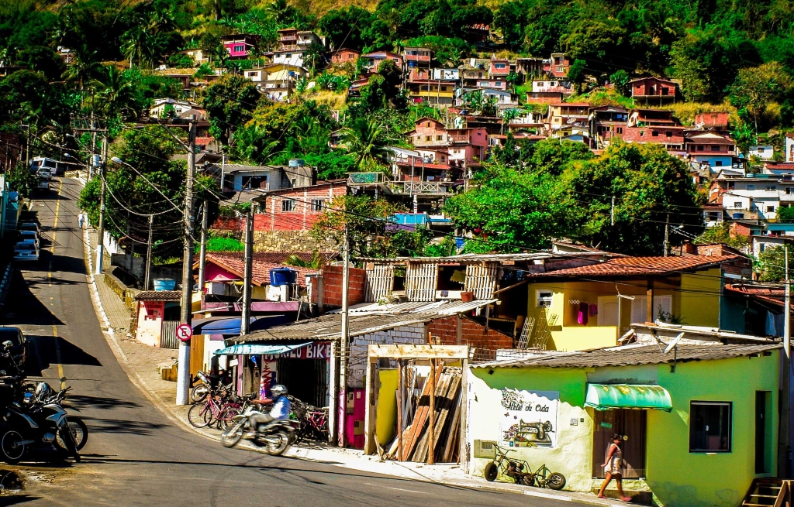
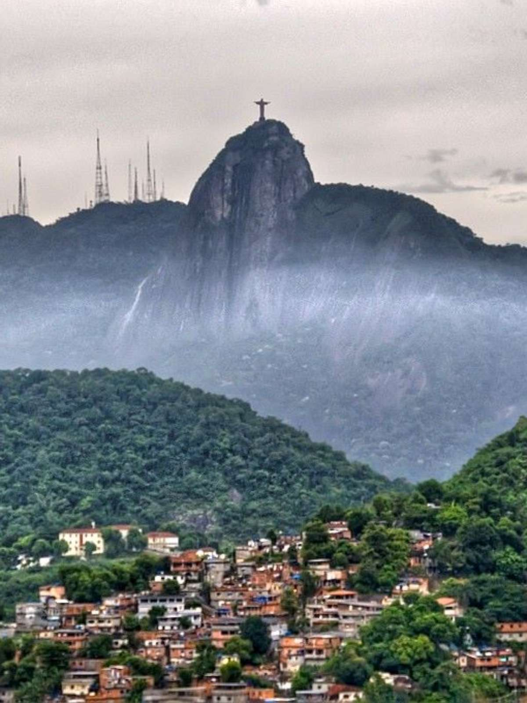
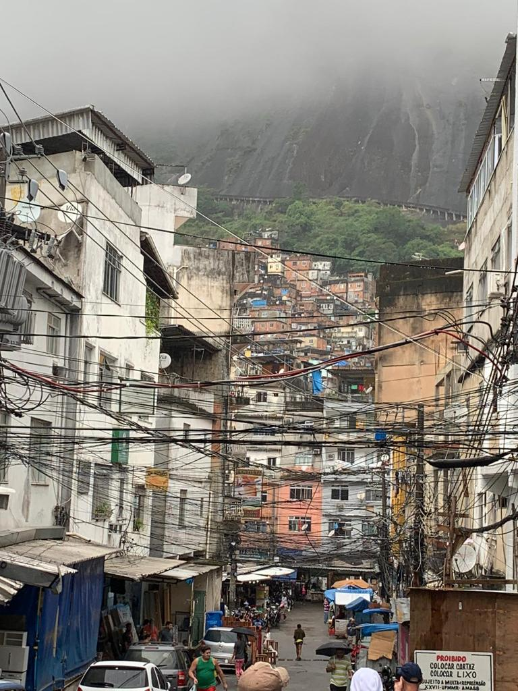
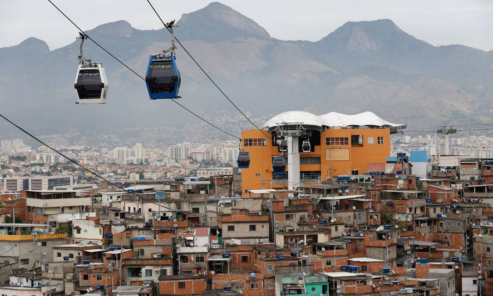
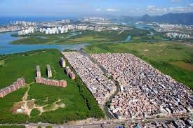

Morro da Providência
A primeira favela do Brasil, carregada de história e luta.
A primeira favela do Brasil, carregada de história e luta.
Famoso pela vista deslumbrante do Morro Dois Irmãos.
Um oásis de lazer e cultura na Zona Norte, com sua praia artificial e atividades.
Um conjunto pulsante de cultura, onde se destaca a icônica Igreja da Penha no horizonte.
Localizado no Complexo do São Carlos, é um símbolo de resistência e identidade comunitária.
Situado no Leme, une a preservação ambiental de suas trilhas com uma vista privilegiada do mar.
A maior comunidade do Brasil, um polo de cultura, empreendedorismo e uma vista única da Zona Sul.
Um dos maiores conjuntos de comunidades do Rio, conhecido por sua forte produção cultural e o icônico teleférico.
Localizada na Zona Oeste, é uma das comunidades mais populosas, com um comércio vibrante e forte influência nordestina.
